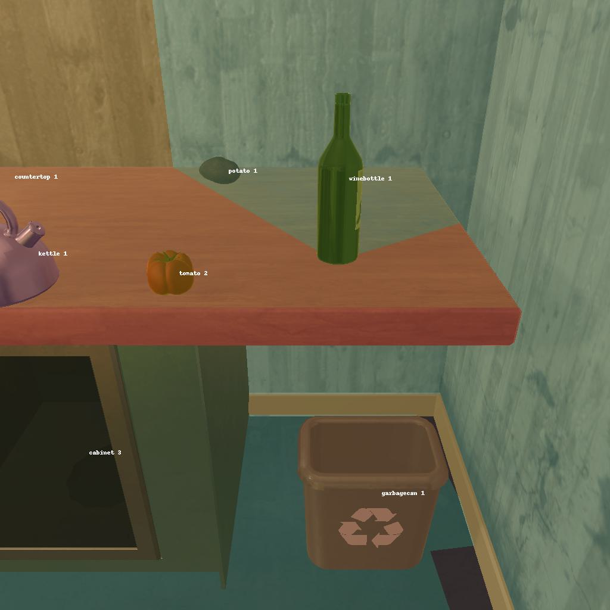

---------------------------------------------------------task: 26---------------------------------------------------------
--------------------------------------------------------------------------------------------------------------------------------------------------------------------
--------------------------------------------------------------------------------------------------------------------------------------------------------------------
Step:--------------------------------------------------------------------------16-------------------------------------------------------------------------------
----------------------------------------
VLM Prompt:
Image1:
**Instruction**
1. Analyze the provided image to identify all visible household objects, focusing on those relevant to the task description "find two kettle and put them in cabinet."
2. Use the analysis of the image and the task hint "The agent must find an object of the desired type, pick it up, find the correct location to place it, put it down there, then look for another object of the desired type, pick it up, return to previous location, and put it down there with the other object." to answer the question: what is the most reasonable action in the choices for the task description "find two kettle and put them in cabinet"?
4. Decide and write the answer using the template: The answer is: (i): , where i is the real number. If there is no desired object in the image, search every place based on **Initial Observation** to find the object. And if no one is exactly correct, choose a similar answer.
**Initial Observation**
You are in the middle of a room. Looking quickly around you, you can see countertop (1), coffeemachine (1), cabinet (1-4), drawer (1-8), sink (1), sinkbasin (1), garbagecan (1), fridge (1), microwave (1), dresser (1), sidetable (1)
**Answer Choices**
(1): go to countertop 1
(2): go to coffeemachine 1
(3): go to cabinet 2
(4): go to drawer 1
(5): go to sink 1
(6): go to sinkbasin 1
(7): go to garbagecan 1
(8): go to cabinet 4
(9): go to drawer 2
(10): go to fridge 1
(11): go to microwave 1
(12): go to dresser 1
(13): go to sidetable 1
(14): go to drawer 3
(15): go to drawer 4
(16): go to drawer 5
(17): go to drawer 6
(18): go to drawer 7
(19): go to drawer 8
(20): open cabinet 3
(21): close cabinet 3
(22): examine cabinet 3
**Answer**
Let's think step by step by following the instructions.
----------------------------------------
----------------------------------------
Original Response:
Firstly, we need to find two kettles. In the image provided, we can see one kettle labeled as "kettle 1" on the countertop 1. There is no second kettle visible in the image. So, we must search for the second kettle based on the Initial Observation which lists all the places we can look for objects in the room.
The most reasonable first action would be to pick up the visible kettle from the countertop 1. However, this action is not listed in the answer choices.
Since the task is to put the kettles in a cabinet and there is an open cabinet labeled "cabinet 3" in the image, it is reasonable to think that we might want to place the kettle in there. However, the task requires us to find two kettles first before placing them in the cabinet.
As the action of picking up the kettle is not available, we must consider the next best action. Since we need to find another kettle, we should start searching in places where a kettle might be stored. Cabinets and drawers are common storage places for kettles. The image shows an open cabinet (cabinet 3), which is a potential place to look for the second kettle.
Therefore, the most reasonable action from the choices provided, which aligns with the task description and takes into account the Initial Observation, would be to examine cabinet 3 to look for the second kettle.
The answer is: (22): examine cabinet 3.
----------------------------------------
----------------------------------------
>>> Refine Original VLM Response and Get Pure Action: examine cabinet 3
----------------------------------------
-----------------------------------------------------------------
Running time: 15.503531217575073 seconds
Total Money: 9.578070000000007
-----------------------------------------------------------------
-----------------------------------------------------------------
Text Observation:On the cabinet 3, you see a winebottle 1, a kettle 1, a tomato 2, and a potato 1.
-----------------------------------------------------------------
UNSUCCEED